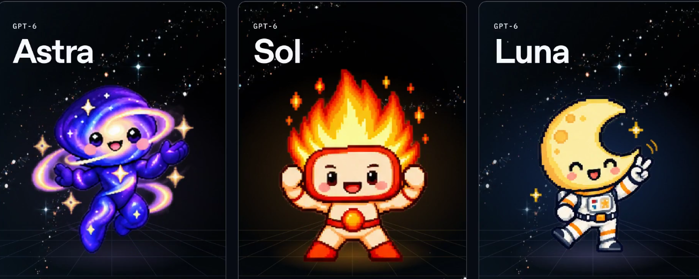
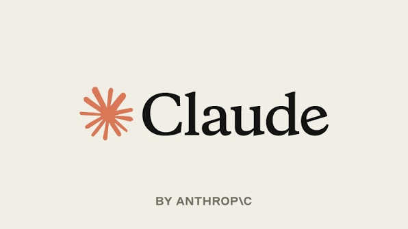
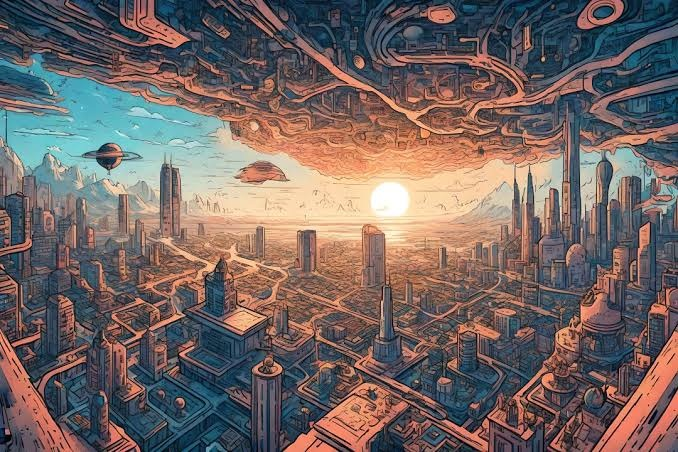
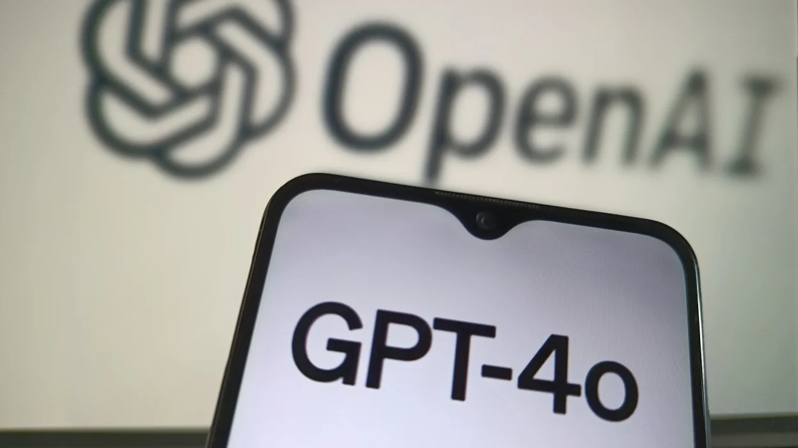
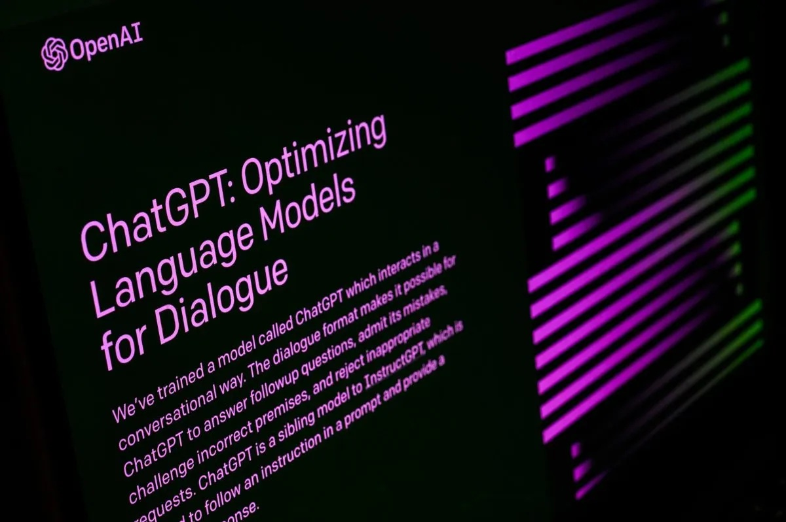
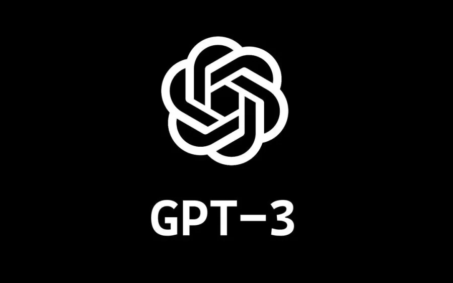

Meaning without employment
Thinking about AI, human work and what gives life meaning if employment becomes less necessary.
My thoughts on AI, what it can do, and where it might take us.
Because I believe it could help cure diseases and be a great help to us. Ever since I was a kid, I’ve been interested in futuristic technology, things like cryonics and life extension. AI feels like it could play a big part in that.
More on longevity ↗Thinking about AI, human work and what gives life meaning if employment becomes less necessary.

Opus 5.5 and GPT-6 Sol, Terra and Luna just dropped.
Why a meaningful AI slowdown feels impossible while companies and countries are locked in a race.
Reading about AI misuse, automated attacks and the growing use of AI to defend against other AI systems.

A personal reaction to AI at work, rapid progress and the possible futures described in AI 2027.

My first proper go with Claude: communication, coding games, usage limits and the companies behind AI.

Thinking about automation, the job market and whether universal basic income could become necessary.

Writing the third issue of OLWA and learning about AI companies, world models and the growing list of chatbots.

My first reaction to DeepSeek and what cheaper, locally runnable AI could mean for everyone else.

Trying ChatGPT’s memory feature and making a custom chatbot by talking to another chatbot.

Live conversations, image generation and deepfakes. Watching AI improve and wondering where it ends.
Testing Gemini against ChatGPT and looking into learning Python to understand AI a little better.

Trying Google Bard, comparing it with ChatGPT and thinking about what plugins might change.

A first reaction to GPT-4, AI coding, language learning and how quickly this is all moving.

It feels like the early days of something potentially massive, a bit like the early internet.
My reaction to Bard, Microsoft’s investment in OpenAI and the idea of a different kind of search.

Trying ChatGPT for writing, learning Spanish and answering questions. Impressed, excited and a bit worried.
My first go with DALL-E 2, and what AI image generation might mean for artists and creative work.